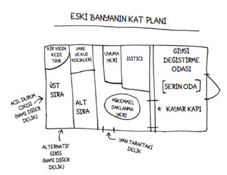

23
Operasyon: Tibby’nin İzinde resmî olarak sona ermişti. GPS cihazını, kedi kamerasını, hayvanlarla iletişim dersinde tuttuğum notları, el ilanlarını ve bantla kaplı notu toparladık, hepsini bir kutuya doldurduk. Kutunun üstüne “Tibia’nın Öteberisi” yazıp bir rafa kaldırdık.
Ama açıklanmayan son bir şey kalmıştı. Tibby neden evi terk etmişti?
Bir cevaba yaklaşma umuduyla son bir girişimde bulunmaya karar verdim. Banya’ya gidecektim.
Üç katlı büyük evin önüne bir kamyonet park edillmişti, arkasında, görüş alanının dışında meşhur kalıntılar vardı. Kapıyı çaldım. Bekledim. Ama açan olmadı. Bu soğuk, buz gibi şehir, diye düşündüm. Tam o sırada bir araba yanaştı, içinden bir adam çıktı. Evet, burada yaşıyordu. Banya mı? Tabii, seve seve gösterirdi.
Adam bahçe kapısını açtı; o yürüyerek, ben de koltuk değneklerime dayanarak evin yanı boyunca uzanan dış merdivenleri tırmandık. Tepeye vardığımızda, terk edilmiş büyük bir alet edevat barakası gibi görünen bir yapıyı işaret etti.
“İşte.”
Banya gerçekten de bir kedicik cennetiydi. Girip çıkmak için keseli sıçan genişliğinde delikleri vardı. Etrafındaki bahçe yabani ot yığınlarıyla kaplıydı. Bambaşka bir dünya, geçip gitmiş yılların bir hatırası, insanların görmezden geldiği, hayvanlar içinse mükemmel olan bir yerdi.

Çok da tuhaftı, şehirdeki bir arka bahçede yere çakılmış bir uzay gemisi gibi yükseliyordu, öyle ki bir an için Tibby’nin bütün o haftalar boyunca çağrılarımı duymamış olabileceğine inanma izni verdim kendime. Belki bu bölgenin çevresinde başka bir dünyaya ait bir güç alanı vardı. Yoğun çalılar ve yabani otlar hiç kuşkusuz sese karşı tampon görevi görmüştü. Derken caddede bir araba alarmı ötmeye başladı, tekdüze çığlıkları yüksek ve gayet netti. Şimdiki zamana döndüm; komşuya teşekkür edip evime yollandım.
Bilgisayarı açıp haritaları yeniden incelememe gerek yoktu. Fotoğrafları gözden geçirmeye ihtiyaç duymuyordum. Hayvan-insan iletişimi kurmak zorunda değildim. Nihai gerçek, uydu haritasındaki pembe kedicik izleri kadar açıkça ortadaydı. Tibby evde olmak istememişti.
Her uzun soluklu ilişkinin inişleri çıkışları vardır. Bir önceki yaz kesinlikle iniş süreciydi. Aylar boyunca yağlı saçlarla, bulanık gözlerle, sonda kullanarak kanepede yatan bir yığından ibarettim. Depresyonum her gözeneğimden sızıyordu. Fiziksel acım elle tutulur derecedeydi. Evde olduğum zamanlarda daima sahiplenici davranan Fibby, haftanın yedi günü, günün yirmi dört saati Tibby’ye tıslayıp vuruyordu. Çikolata ve anlayış getiren ziyaretçilerin biri gidiyor biri geliyordu. Ailem bakımıma yardımcı olmak için haftalarca kalmıştı. Tibby canından bezmişti.
Önemli olan şuydu ki, geri dönmüştü.